BeatConfused Studio
eTuttino manuals
The eTuttino is an electronic chromatic button accordion: 44 buttons in C-griff (G3 to E6) on an 18.5 mm hexagonal grid, with its own sound, a headphone output, a volume knob and an instrument selector. The keys are magnetic, so every note follows how hard you play it (velocity). These manuals take you from ordering the boards to playing.

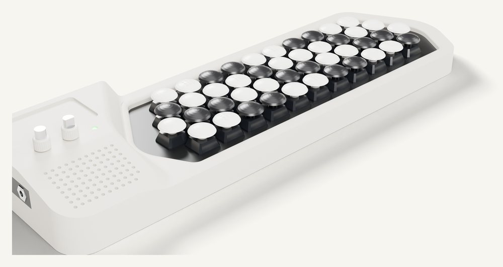
The design is complete and ready to make: boards, case, caps and firmware. The firmware has been flashed and tested on a Teensy 4.0 with its Audio Board; the full instrument has not been built yet, so treat the first one as a prototype and check each step as you go.
Start here
Before you start
Listen before you build
Open beatconfused.com/etutti, switch on Listen in this browser and play with the mouse or the computer keyboard. The accordions and the synth are the same synthesis as on the Teensy. Piano, bass and guitar are only approximations in the browser: the Teensy plays recorded samples.
How the eTuttino works
Each key is a Gateron magnetic switch (KS-20) with a small magnet in its stem. Under every switch, on the back of the main board, a DRV5056A3 Hall sensor measures the magnet's field: the further the key goes down, the higher its voltage. Three CD74HC4067 multiplexers bring the 44 sensors to three analog inputs of a Teensy 4.0, which reads every key thousands of times a second and works out the velocity from how long the key takes to go down.
The sound comes from the Audio Board Rev D under the Teensy. A small controls board under the lid carries the volume knob, the instrument selector (an encoder with a click) and the LED. The eTuttino plays on its own, from USB power, and also talks to the web page over USB MIDI.
Size and layout
- About 331 × 100 mm; 33 mm tall at the interface and 26.6 mm at the top of the buttons.
- The keyboard on the right: four rows, every button 18.5 mm from its six neighbours, row 1 nearest you.
- The interface on the left: volume, instrument selector and LED on top, a grille on the part that slopes towards you, and the micro-USB and headphone sockets on the left face, away from the playing hand.
- Inside: one main board under everything, the Teensy and Audio Board stacked in the back left corner, the controls board hanging under the lid.

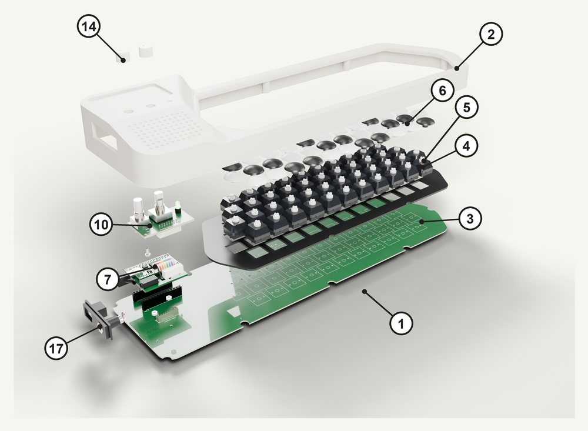
Parts list
The numbers in the drawings below.
| # | Part |
|---|---|
| 1 | bottom (case) |
| 2 | lid (case) |
| 3 | main board |
| 4 | switch plate |
| 5 | Gateron KS-20 switch (×44) |
| 6 | button cap (×44) |
| 7 | Teensy 4.0 |
| 8 | Audio Board Rev D |
| 9 | extra-long 1×14 header (×2) |
| 10 | controls board |
| 11 | volume pot RK09K |
| 12 | encoder EC11E |
| 13 | LED + spacer |
| 14 | knob (×2) |
| 15 | 8-way JST PH cable |
| 16 | J3 header |
| 17 | connector insert |
| 18 | panel micro-USB socket |
| 19 | panel 3.5 mm jack |
| 20 | 90° micro-USB cable |
| 21 | M2 × 10 screw (×2) |
| 22 | M2 nut (×2) |
| 23 | M2 × 5 self-tapping screw (×2) |
| 24 | M2.5 × 8 self-tapping screw (×9) |
Two ways to get the main board
- Route A: soldered by the factory. JLCPCB makes the board and solders every small part on the back (PCBA). It's the easiest and most reliable route.
- Route B: everything soldered at home. The board arrives bare and you solder 99 SMD parts (44 sensors, 49 capacitors, 2 resistors, three 24-pin chips, one regulator). Cheaper, but it needs a fine-tip iron, flux, tweezers and patience.
Everything else is the same for both: the controls board, the stack, the switches and the case are put together at home.
What to buy
| Part | Qty | Notes |
|---|---|---|
| Main board, 1.2 mm FR-4 | 1 | route A: assembled route B: bare |
| Switch plate, 1.6 mm FR-4 | 1 | from the same fab, no copper |
| Controls board, 1.6 mm FR-4 | 1 | bare; all its parts are through-hole |
| Gateron KS-20 magnetic switches (north pole down) | 44 | must be magnetic (Hall-effect); ordinary switches won't work |
| Teensy 4.0 | 1 | pjrc.com or a distributor |
| Audio Adaptor Board Rev D (or D2) | 1 | pjrc.com |
| 1×14 extra-long male pin headers, 2.54 mm (≈ 20–25 mm pins) | 2 | one header joins Teensy, Audio Board and main board |
| Alps EC11E encoder with switch, 15 pulses / 15 detents, 15 mm shaft | 1 | instrument selector |
| Alps RK09K vertical pot, 10 k linear, 15 mm shaft | 1 | volume |
| 3 mm LED, red/green, common cathode (3 legs) | 1 | + a 4 mm LED spacer (Seixo) |
| 3 mm round light pipe, ≈ 4 mm long | 1 | Madeira only |
| Knobs, Ø 9 mm, for 6 mm shafts | 2 | |
| JST PH 8-pin vertical header B8B-PH-K-S | 2 | J3 on the main board, J1 on the controls board |
| JST PH 8-way cable, 1:1, ≈ 60 mm | 1 | controls board to J3 |
| Panel micro-USB (micro-B female) socket, ≤ 10 mm deep | 1 | in the connector insert |
| Micro-USB cable with a 90° plug, ≈ 10 cm (plug ≤ 11 mm long, ≤ 7.5 mm high) | 1 | panel socket to the Teensy |
| Panel 3.5 mm stereo jack, M6 thread, ≤ 10 mm deep | 1 | headphones; + 3 thin wires |
| M2 × 10 mm screws + M2 nuts | 2 + 2 | main board to the bottom |
| M2 × 5 mm self-tapping screws | 2 | controls board to the lid's posts |
| M2.5 × 8 mm self-tapping screws | 9 | bottom to lid (or heat-set inserts + M2.5 × 6) |
| Stick-on rubber feet | 4 | optional |
Magnetic switches have no electrical contacts, so they aren't soldered: the plate holds them and their two plastic pegs drop into holes in the main board.
What to print or mill
-
The case, in one of two finishes with exactly the same shape:
- Seixo: resin (SLA) or nylon (MJF), one colour. Two parts: lid and bottom (STEP files alongside).
- Madeira: white oak, cut on a 3-axis CNC in two setups (the top, then the pocket inside from below), oil finish. body and bottom cover (STEP; a raw block of about 350 × 110 × 40 mm).
- The connector insert, black: insert.stl.
- The button caps: 18 natural (white), 18 sharp (black) and 8 C/F (white, with the raised check), after the test below.

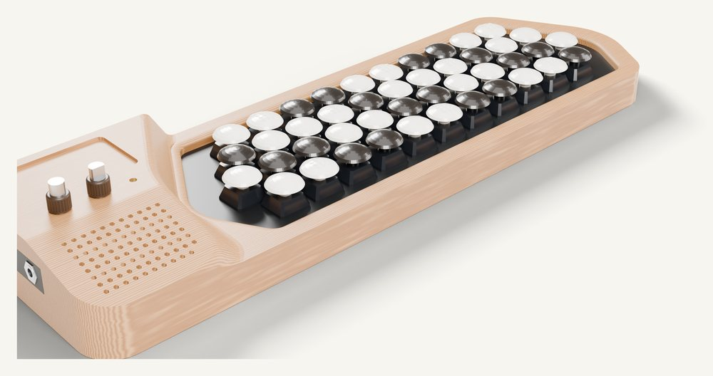
Any online 3D-printing service takes the STL files in millimetres: JLC3DP (can ship with the boards), PCBWay or Craftcloud, which compares many printers. The lid is 331 mm long, more than most home printers. For the Madeira, ask a local CNC or woodworking shop with the STEP files.
Tools
- A temperature-controlled soldering iron, thin solder, flux, side cutters and tweezers
- A multimeter and a ruler or caliper
- Small screwdrivers (M2, M2.5) and a 4 mm nut driver or pliers
- A computer with Chrome or Edge and the Arduino IDE with Teensyduino
- A small magnet (a fridge magnet will do) for the sensor test
Rough cost
Rough figures in US dollars, as of October 2026, before shipping and taxes. The sites show the exact price before you pay.
| Item | Route A | Route B |
|---|---|---|
| Boards from JLCPCB (main, plate, controls; 5 of each) | ≈ US$ 35–70 | ≈ US$ 35–70 |
| SMD assembly (PCBA), 2 main boards, parts included | ≈ US$ 80–140 | — |
| SMD parts (1 board, with spares) | — | ≈ US$ 35–55 |
| Teensy 4.0 + Audio Board Rev D | ≈ US$ 40 | ≈ US$ 40 |
| Gateron KS-20 switches (44) | ≈ US$ 30–50 | ≈ US$ 30–50 |
| Encoder, pot, LED, knobs, connectors, cables, screws | ≈ US$ 20–35 | ≈ US$ 20–35 |
| Case: Seixo printed (resin or MJF), insert and 44 caps | ≈ US$ 50–110 | ≈ US$ 50–110 |
The Madeira depends on the shop and the wood; ask for a quote with the STEP files.
Downloads
- etuttino_gerbers.zip: the main board (Gerbers + drill files)
- etuttino_bom.csv and etuttino_cpl_bottom.csv: parts list and placement for JLCPCB assembly
- etuttino_plate_gerbers.zip: the switch plate
- etuttino_controls_gerbers.zip: the controls board
- Case, insert and caps (STL + STEP)
- Firmware and board and case design on GitHub
Boards · route A
Main board soldered by the factory (JLCPCB)
JLCPCB makes the main board and solders every SMD part on its back. The steps follow JLCPCB's site as it was when this was written; button names may change a little, but the choices are the same. PCBWay and other fabs work the same way.
1. Order the main board with assembly
- On jlcpcb.com, click Order now and upload
etuttino_gerbers.zip. The site reads the outline (about 328 × 97 mm, shaped like the case) and shows a preview. -
Board settings:
- Layers: 2 · Base material: FR-4 · PCB Qty: 5 (the minimum)
- PCB Thickness: 1.2 mm. This matters: a thinner board puts the sensor closer to the magnet.
- Surface finish: HASL (lead free) or ENIG · any colour · the rest at the defaults
- Turn on PCB Assembly: Economic, Assembly Side: Bottom Side (every part is on the back), PCBA Qty: 2 (the minimum), tooling holes "Added by JLCPCB".
- Upload the BOM (
etuttino_bom.csv) and the CPL (etuttino_cpl_bottom.csv). -
On the parts screen, check every line. The capacitors, resistors and regulator carry their LCSC numbers; for
DRV5056A3QDBZRandCD74HC4067M96, search by name and pick exactly that part. If the A3 is out of stock, theDRV5056A4QDBZRalso works (less sensitive). Don't use DRV5055 or DRV5057. - Check the placement preview: fabs sometimes turn a package. Each multiplexer's pin-1 dot must sit at the corner marked on the silkscreen, the regulator's wide tab on the wide pad, and each sensor's 2-pin side on its 2 pads. Fix any turned part with the rotate button.
- Confirm and add to cart.
2. Order the plate and the controls board
- Upload
etuttino_plate_gerbers.zip: FR-4, 1.6 mm, no assembly. It has no copper; black looks best under the keys. - Upload
etuttino_controls_gerbers.zip: 2 layers, FR-4, 1.6 mm, no assembly (41.5 × 25.5 mm).
3. When the boards arrive
- Look over the back of the main board with a magnifier: no crooked chips and no solder joining neighbouring pins, especially on the multiplexers.
- With a multimeter on continuity, check there is no short between the regulator U60's big tab (3.3 V) and a Teensy GND hole, nor between the VIN hole and GND.
- Carry on with Building the eTuttino.
Boards · route B
Everything soldered at home
The main board arrives bare and you solder the 99 SMD parts on its back. They're small, but none is hard: the tightest pin spacing is 0.95 mm (sensors) and 1.27 mm (multiplexers).
1. Order the boards and the parts
- Order the main board as in route A (2 layers, 1.2 mm, 5 boards) but without PCB Assembly; add a stencil for the bottom side if you'll use solder paste. Order the plate and the controls board as in route A, step 2.
-
Buy the SMD parts (from LCSC, which can ship with JLCPCB, or any distributor), with spares:
Part Code Used Buy Hall sensor DRV5056A3QDBZR44 48–50 Capacitor 100 nF 0805 LCSC C49678 47 60 Multiplexer CD74HC4067M963 4 3.3 V regulator AMS1117-3.3(LCSC C6186)1 2 Capacitor 10 µF 0805 LCSC C15850 1 2 Capacitor 22 µF 0805 LCSC C45783 1 2 Resistor 330 Ω 0805 LCSC C17630 2 5
2. Soldering order (all on the back)
Lay the main board back side up and go from the hardest part to the easiest. Seen from the back, left and right are swapped: the interface end is on your right.

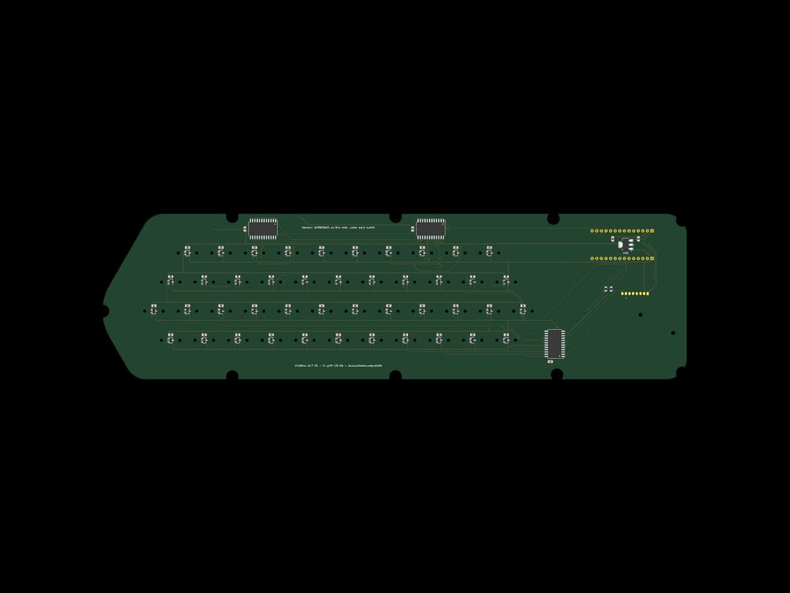
- Multiplexers U51, U52, U53 (SOIC-24). U51 sits just past the interface, beside the start of rows 1 and 2; U52 and U53 lie sideways in the strip behind row 4. Line up the chip's pin-1 dot with the mark on the silkscreen, tin one corner pad, align, solder the opposite corner, then the rest with flux. Bridges come off with flux and braid.
- Regulator U60 (SOT-223), between the two rows of Teensy holes: the wide tab on the wide pad. Then C80 (10 µF) and C81 (22 µF), one on each side; they look the same, so check the silkscreen.
-
Sensors U1–U44 (SOT-23), in the middle of each key: the 2-pin side on the 2 pads, so it can't go in backwards.
Check the marking: it must be a DRV5056 (A3 or A4). DRV5055, DRV5053 and DRV5057 look the same but won't work here.
- 100 nF capacitors: C1–C44, one beside each sensor, and C71–C73, one next to each multiplexer.
- R1 and R2 (330 Ω), the LED resistors, under the interface.
- Clean the flux off with isopropyl alcohol and check everything with a magnifier.
With paste and a stencil: paste through the stencil, place every part with tweezers and reflow on a hot plate; the front is still empty, so the board lies flat.
3. Electrical check
- With a multimeter on continuity, check there is no short between U60's tab (3.3 V) and a Teensy GND hole, nor between the VIN hole and GND.
- Carry on with Building the eTuttino. The page's key test will show, sensor by sensor, whether each joint is good.
Assembly · both routes
Building the eTuttino
1. Test caps first
The caps sit on a standard MX cross, but printers differ by a few tenths of a millimetre. Before printing all 44, print keycap_test_4.stl: four caps on a sprue, laid out like four neighbouring buttons.

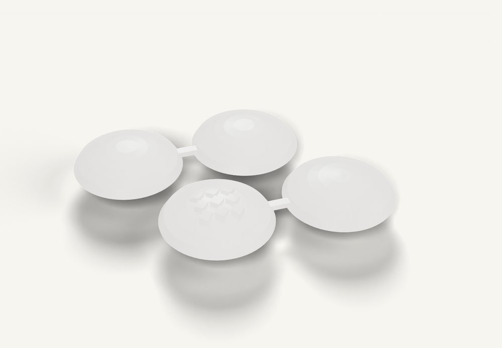

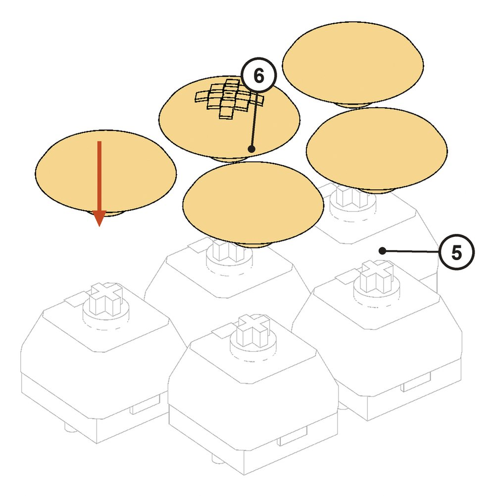
- Snap four switches into the plate in neighbouring positions and cut the caps off the sprue.
- Each cap should press on firmly and not wobble; pull it off and on a few times.
- Press every key down fully: the skirts must not touch each other, and the keys must spring back.
- If the fit is loose or tight, tell the print service, or adjust
CROSSinkeycap.py, and print the test again. Then print the 44 caps.
2. The main board

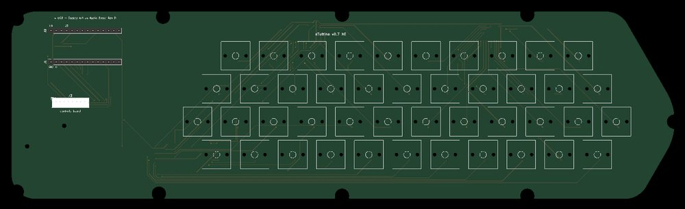
Whichever route you took, the back now carries the 44 Hall sensors, the three multiplexers (each reads 16 keys through one Teensy input) and the 3.3 V regulator that feeds them from the USB's 5 V.
- Solder J3, the JST PH 8-pin vertical header, on the front, in front of the Teensy holes, its opening facing up. It's the only through-hole part on the main board.

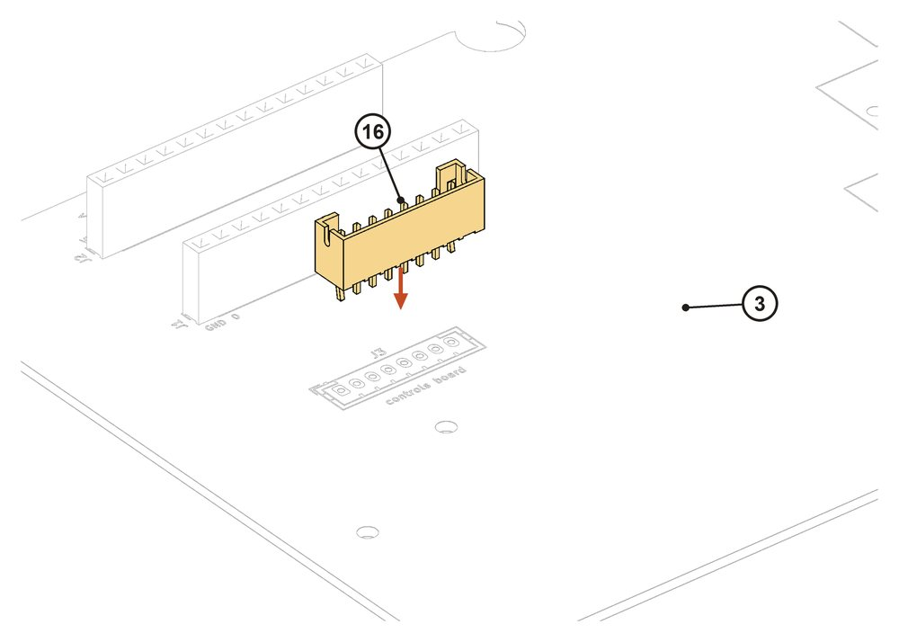
3. The Teensy and the Audio Board: a low stack
The Teensy and the Audio Board sit in the back left corner, under the interface, with the USB towards the left face. The Teensy is soldered straight onto the Audio Board, with no sockets, to keep the stack low; the same pins carry on down through the main board. These 28 legs are the only link between the stack and the main board.

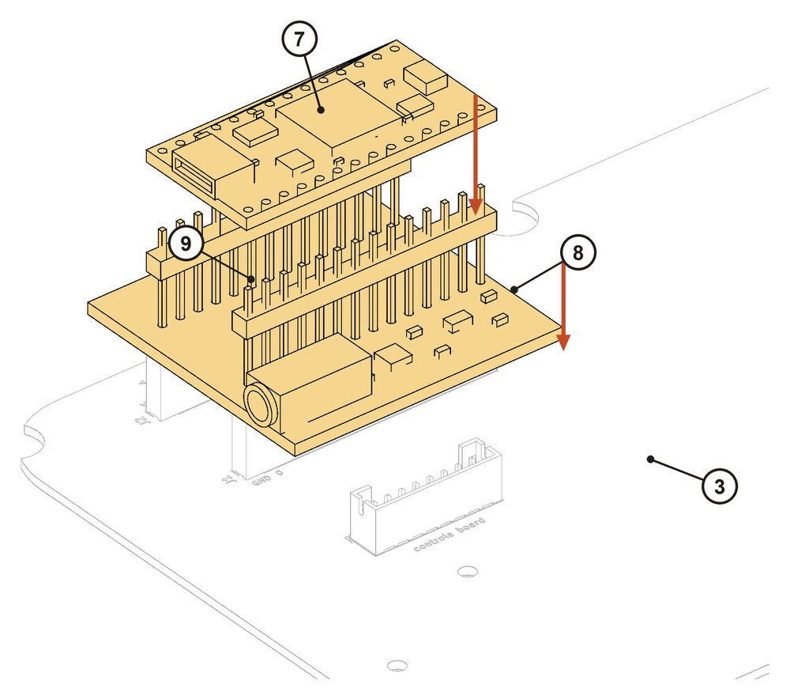

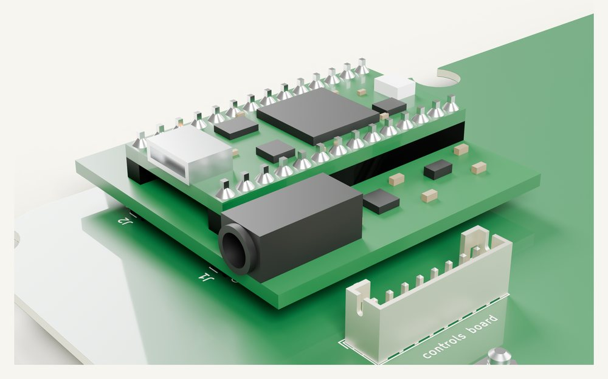
- Push the two extra-long headers into the Audio Board from the top: the plastic rests on the Audio Board and the long ends point down.
- Lay the Teensy on the plastic, the short ends through its holes, pin 0 over pin 0 (the Teensy's USB at the same end as the Audio Board's headphone socket). Solder the Teensy on top, then the Audio Board underneath. The header's plastic is the only spacer between them.
- Push the long legs into the main board's two rows of holes from the front: the "GND/0" row is the front one, the USB points to the left face ("< USB" on the silkscreen). Hold the Audio Board about 3 mm above the main board (a strip of 3 mm card helps), solder the legs on the back and trim them flush: the back must stay flat.
- Measure from the underside of the Audio Board to the top of the Teensy's USB socket. It should be about 13 mm or less (the case was checked with 13 mm). It has room for up to 16.9 mm (Seixo) or 16.4 mm (Madeira). For the future eTuttiChorus it must be 10 mm or less.
Don't go on if the stack is taller than the case allows: the lid would press on the Teensy.
4. Flash the firmware and test the sensors
- Install the Arduino IDE and Teensyduino.
- Download the etutti_synth folder and open
etutti_synth.ino, keeping the other files in the same folder. - Under Tools › Board pick Teensy 4.0; under Tools › USB Type pick MIDI. Plug in the USB and click Upload.
- Open beatconfused.com/etutti in Chrome or Edge, click Connect, allow MIDI, and in the eTuttino keys panel turn on Key test.
- Bring a small magnet over each key position, from the front. That key's ring on screen should fill up. If nothing happens, turn the magnet over: only one pole is read.
If one sensor doesn't respond, redo its joints. If a whole block of neighbouring keys doesn't, check that block's multiplexer (U51: row 1 and the left of row 2; U52 and U53: the rest, left and right). If nothing responds, measure 3.3 V between U60's tab and GND.
5. Plate and switches
- Snap the 44 switches into the plate from the top until they click.
- Lower the plate with its switches onto the main board: each switch's two plastic pegs drop into the board's holes. The board must sit right against the bottom of the switches: the distance from magnet to sensor is part of the measurement. The case's lid will hold the plate down by its edge.

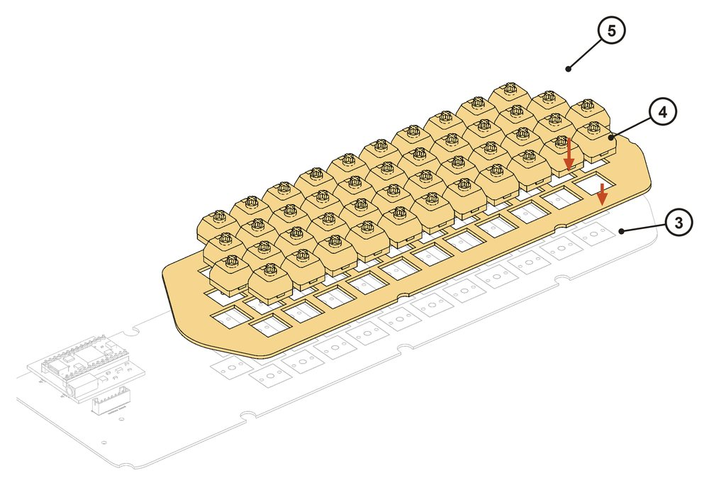
6. The controls board
- On the controls board's top: the pot (RV1, volume) on the left and the encoder (SW1, instrument) in the middle. Solder them flat against the board.
-
The LED (D1) on the right. The middle leg is the common cathode and the red leg goes in
the square hole; check your LED's datasheet, since the long-leg rule doesn't apply to three-leg LEDs.
- Seixo: on a ≈ 4 mm spacer, so its dome sits in the lid's hole, flush with the top.
- Madeira: straight on the board; the light pipe in the lid carries the light up.
- On the back: J1, the JST PH 8-pin vertical header, facing down.
- Plug the 8-way cable into J1; its other end goes to J3 on the main board, pin for pin.

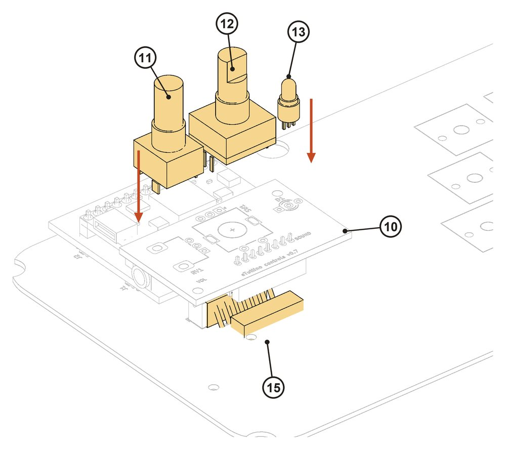

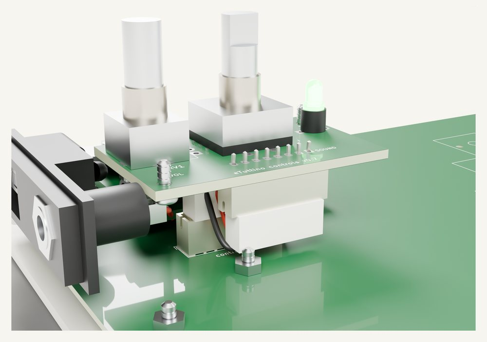
7. The panel connectors
- Fit the panel micro-USB socket and the 3.5 mm jack in the black insert (the jack screws in with its nut).
- Plug the 90° micro-USB cable from the panel socket into the Teensy.
-
Wire the jack to the Audio Board's headphone output: three thin wires, left, right and the
headphone ground, soldered to the pins of the Audio Board's own headphone socket.
The Audio Board's headphone ground is a virtual ground, not GND: never join the jack's sleeve to GND or to the USB shield.
- The insert goes into its opening in the case's left face in the next step; the parts behind it don't need to touch the boards.

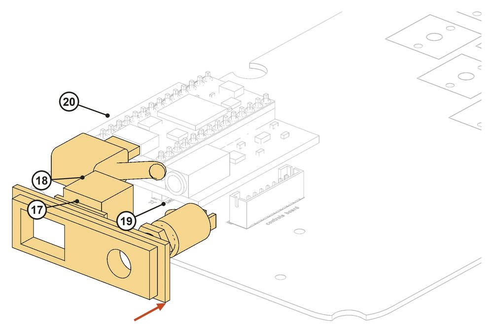
8. Close the case
- Lay the main board, with everything on it, into the bottom: it rests on the bottom's pillars, one under every triangle of three keys.
- From underneath, put the two M2 × 10 mm screws up through the two thick pillars and the board's holes H1 and H2, and tighten a nut on each from the top.
- Screw the controls board to the two posts under the lid with the M2 × 5 mm self-tapping screws, the shafts through the lid's holes. Madeira: push the light pipe into its Ø 3.1 hole first and sand its tip flush.
- Plug the 8-way cable into J3, set the connector insert into the left face, and lower the lid onto the bottom: the lid's edge presses the plate down round the keys.
- From below, drive the nine M2.5 × 8 mm screws through the bottom into the lid's bosses. Don't overtighten. Stick on the feet, push the two knobs on and fit the caps: white on the naturals, black on the sharps, the checked ones on the Cs and Fs.

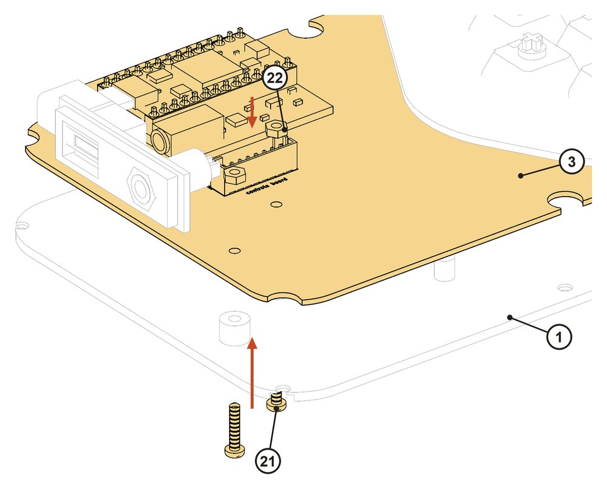

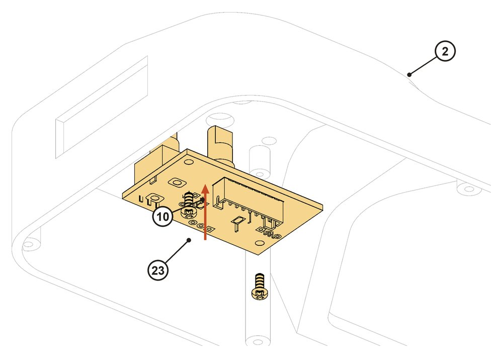

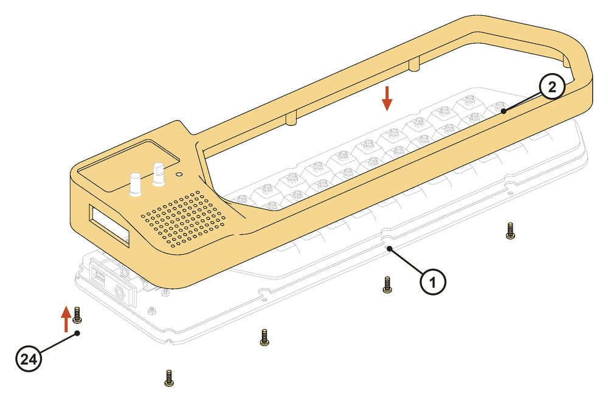

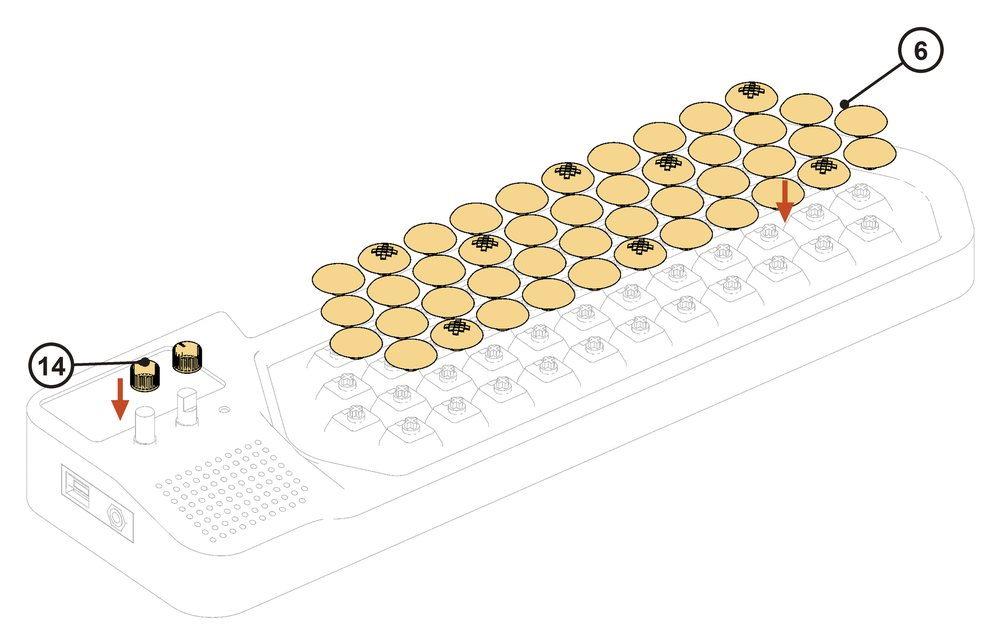

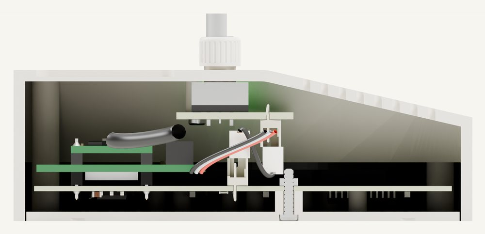
9. First use
- Plug in headphones and the USB. Don't touch the keys for the first second: the LED shows orange while the Teensy measures every key at rest, then green.
- On the page, click Connect, then Calibrate keys, and press every key all the way down once. The Teensy keeps each key's travel, even unplugged.
- Turn on Key test: each ring should go from empty (released) to full (bottomed out).
- Turn the volume knob, and turn the selector: the instrument changes at once, the LED blinks green, and the page follows both. Click the selector to keep that instrument for next time.
The magnet test in step 4 leaves a wrong calibration stored, so this calibration is a must once the switches are in. Done: on to the user manual.
User manual
Playing the eTuttino
Power and sound
- Power: a micro-USB cable from the left face to a computer or a phone charger. On a charger the eTuttino plays on its own, without the page.
- Sound: headphones or a speaker in the 3.5 mm socket beside the USB.
- Don't touch the keys for the first second: that's when the Teensy measures every key's rest position (the LED is orange).
- It starts on the instrument you last kept with the selector, or on the classic accordion.
The knobs
- Volume (left knob): the headphone volume. It only acts when you turn it, so a volume set on the page holds until you touch the knob.
-
Instrument selector (right knob, endless, with a click):
- Turn it: the instrument changes at once, in the order accordion, piano, bass, guitar, synth. The LED blinks green while the new one isn't kept yet.
- Click after turning: keeps that instrument; the eTuttino will start with it next time.
- Click without turning: back to the default sound, the classic accordion (register MM, dry), and that becomes the start-up instrument.
- With the page connected, the page follows both knobs: its volume slider and instrument move with them.
The LED
| LED | Meaning |
|---|---|
| Orange | Power-up: the keys' rest positions are being read. Keep your hands off. |
| Green | Ready, playing. |
| Green, blinking slowly | A new instrument picked with the selector, not kept yet: click to keep it. |
| Red, blinking | Something didn't answer: the Audio Board, or a key's sensor. Turn on Key test on the page: a key whose ring never moves has a sensor problem. If every key works, the Audio Board isn't answering: check the stack's solder joints. |
| Off | No USB power, or the controls board's cable isn't seated in J3 (or J1). |
The keyboard
- There are 4 rows. Row 1 is the one nearest you: A3 to D♯6. Row 2 runs G3 to E6 and row 3 G♯3 to D6. Row 4 repeats row 1's notes from A3 to C6, on row 2's columns.
- In C-griff, each key along a row is a minor third (3 semitones) above the previous one. Diagonally, from one row to the next, the step is 1 semitone.
- White buttons are the natural notes, black ones the sharps. Every C and F has a raised diagonal check on top, so you can find your place by touch without looking.
- The page switches to B-griff, C-griff's mirror image (rows 1 and 3 swap), and the real keys follow. The checked caps then still sit on the keys that played C and F in C-griff.
With the beatconfused.com/etutti page
- Open the page in Chrome or Edge (Safari has no Web MIDI), click Connect and allow MIDI. The device shows up as "eTutti" (or "Teensy MIDI").
- On connecting, the page sends all its settings to the Teensy. Apart from the instrument kept with the selector, they aren't stored there: after a power cycle the eTuttino starts with its own sound until the page connects again.
- Instrument: classic accordion, jazz accordion, piano, bass, guitar (nylon) or synth. "Reset to default" goes back to the classic accordion; "modified" shows when you've changed something from the instrument's preset.
- Accordion register: the round switch turns each reed set on and off (16', 8' open, 8' in cassotto, 4'). The named buttons (Master, Violin, Clarinet…) pick ready-made combinations.
- Envelope, volume, tone and ambience: shape the sound live.
- Knobs: the page shows what the volume knob and the selector do, without sending anything back.
- Computer keyboard: plays from four rows of keys (the page shows your own keyboard's labels). The page's octave and velocity only apply to these notes and the on-screen ones.
- Listen in this browser: plays the sounds through the computer's speakers, with or without the eTuttino. It stays off until you switch it on.
Velocity (how hard you play)
The eTuttino times how long each key takes to go down: fast sounds loud, slow sounds soft. In the eTuttino keys panel:
- Fixed: every note at the same level, like an ordinary keyboard.
- Light touch: loud notes with little effort.
- Normal: the default.
- Firm touch: you have to play faster to sound loud.
Calibration and key test
- The Teensy learns the bottom of each key on its own (the deepest press it has seen) and keeps it even when unplugged. The rest position is measured at every start.
- Click Calibrate keys and press every key all the way down once after you swap a switch, open the case, or notice a key that triggers too early or too late.
- Key test shows, with a ring around each on-screen key, how far the real key is pressed.
As a MIDI controller
The eTuttino is a standard USB MIDI device. In a music program (DAW) it shows up as a MIDI input and sends its notes on channel 1, with velocity. It also plays any notes it receives, on any channel, with its own sound.
Care
- Seixo: wipe with a soft cloth, slightly damp with water and a drop of mild soap. No solvents.
- Madeira: a dry or barely damp cloth. Keep it away from water, heaters and long hours of direct sun. When the wood looks dry, wipe on a thin coat of the same oil it was finished with and buff off the excess.
- Buttons: they pull straight up for cleaning; push each one back on the same key (white, black, checked).
- USB cable: pull the plug straight out, never the cable sideways, and don't carry the eTuttino by its cable. The socket sits in the insert and a sideways pull strains it and the short cable inside.
Troubleshooting
| What happens | What to do |
|---|---|
| The page can't find the eTutti | Use Chrome or Edge and allow MIDI. Check the firmware was flashed with USB Type = MIDI. |
| A key doesn't play | Turn on Key test. If its ring doesn't move, that key's sensor needs checking. |
| A key triggers on its own, or too early or late | Click Calibrate keys and press every key to the bottom. |
| Every note sounds the same, no dynamics | Key velocity is on "Fixed". Pick Normal. |
| No sound | Check the headphones and turn the volume knob. Click "All notes off" (Esc) on the page. |
| The knobs do nothing | The controls board's cable isn't seated in J3 or J1. |
| One click of the selector jumps two instruments, or two clicks one | The encoder isn't the 15-pulse / 15-detent one: change ENC_STEPS_PER_DETENT in the firmware (2 for a 30-detent EC11E) and flash it again. |
| Every note sounds twice | "Listen in this browser" is on with the eTuttino connected: switch one of them off. |
| A note is stuck | Esc, or "All notes off" on the page. |
| The LED blinks red or stays off | See The LED above. |
Questions and ideas: beatconfused@beatconfused.com.
O eTuttino é um acordeão cromático de botões eletrônico: 44 botões no sistema C-griff (Sol3 a Mi6) numa grade hexagonal de 18,5 mm, com som próprio, saída de fone, um knob de volume e um seletor de instrumento. As teclas são magnéticas, então cada nota sai com a força com que você toca (velocity). Estes manuais vão da encomenda das placas até tocar.
O projeto está completo e pronto para fabricar: placas, case, capas e firmware. O firmware foi gravado e testado num Teensy 4.0 com a Audio Board; o instrumento inteiro ainda não foi montado, então trate o primeiro como protótipo e confira cada passo.
Comece aqui
Antes de começar
Ouça antes de montar
Abra beatconfused.com/etutti, ligue Ouvir no navegador e toque com o mouse ou o teclado do computador. Os acordeões e o synth usam a mesma síntese do Teensy. Piano, baixo e violão no navegador são só aproximações: o Teensy toca amostras gravadas.
Como o eTuttino funciona
Cada tecla é um switch magnético Gateron (KS-20) com um pequeno ímã na haste. Sob cada switch, no verso da placa principal, um sensor Hall DRV5056A3 mede o campo do ímã: quanto mais a tecla desce, maior a tensão. Três multiplexadores CD74HC4067 levam os 44 sensores a três entradas analógicas de um Teensy 4.0, que lê cada tecla milhares de vezes por segundo e calcula a velocity pelo tempo que a tecla leva para descer.
O som sai da Audio Board Rev D, sob o Teensy. Uma plaquinha de controles sob a tampa leva o knob de volume, o seletor de instrumento (um encoder com clique) e o LED. O eTuttino toca sozinho, só com a alimentação USB, e também conversa com a página por MIDI USB.
Tamanho e disposição
- Cerca de 331 × 100 mm; 33 mm de altura na interface e 26,6 mm no topo dos botões.
- O teclado à direita: quatro fileiras, cada botão a 18,5 mm dos seis vizinhos, a fileira 1 mais perto de você.
- A interface à esquerda: volume, seletor e LED em cima, uma grade na parte que desce para você, e as entradas micro-USB e de fone na face esquerda, longe da mão que toca.
- Dentro: uma placa principal sob tudo, o Teensy e a Audio Board empilhados no canto de trás à esquerda, a plaquinha de controles presa sob a tampa.
Lista de peças
Os números dos desenhos abaixo.
| # | Peça |
|---|---|
| 1 | fundo (case) |
| 2 | tampa (case) |
| 3 | placa principal |
| 4 | plate dos switches |
| 5 | switch Gateron KS-20 (×44) |
| 6 | capa do botão (×44) |
| 7 | Teensy 4.0 |
| 8 | Audio Board Rev D |
| 9 | barra de pinos 1×14 extralonga (×2) |
| 10 | plaquinha de controles |
| 11 | potenciômetro de volume RK09K |
| 12 | encoder EC11E |
| 13 | LED + espaçador |
| 14 | knob (×2) |
| 15 | cabo JST PH de 8 vias |
| 16 | conector J3 |
| 17 | inserto dos conectores |
| 18 | micro-USB de painel |
| 19 | jack de 3,5 mm de painel |
| 20 | cabo micro-USB de 90° |
| 21 | parafuso M2 × 10 (×2) |
| 22 | porca M2 (×2) |
| 23 | parafuso autoatarraxante M2 × 5 (×2) |
| 24 | parafuso autoatarraxante M2,5 × 8 (×9) |
Duas maneiras de ter a placa principal
- Opção A: soldada pela fábrica. A JLCPCB faz a placa e solda todas as peças pequenas no verso (PCBA). É a opção mais fácil e confiável.
- Opção B: tudo soldado em casa. A placa chega nua e você solda 99 peças SMD (44 sensores, 49 capacitores, 2 resistores, três chips de 24 pinos e um regulador). Sai mais barato, mas pede ferro de ponta fina, fluxo, pinça e paciência.
O resto é igual nas duas: a plaquinha de controles, a pilha, os switches e o case são montados em casa.
O que comprar
| Peça | Qtd | Observações |
|---|---|---|
| Placa principal, FR-4 de 1,2 mm | 1 | opção A: montada opção B: nua |
| Plate dos switches, FR-4 de 1,6 mm | 1 | da mesma fábrica, sem cobre |
| Plaquinha de controles, FR-4 de 1,6 mm | 1 | nua; todas as peças dela são PTH |
| Switches magnéticos Gateron KS-20 (polo norte para baixo) | 44 | precisam ser magnéticos (efeito Hall); switches comuns não funcionam |
| Teensy 4.0 | 1 | pjrc.com ou um distribuidor |
| Audio Adaptor Board Rev D (ou D2) | 1 | pjrc.com |
| Barras de pinos macho 1×14 extralongas, 2,54 mm (pinos de ≈ 20–25 mm) | 2 | a mesma barra une Teensy, Audio Board e placa principal |
| Encoder Alps EC11E com chave, 15 pulsos / 15 cliques, eixo de 15 mm | 1 | seletor de instrumento |
| Potenciômetro vertical Alps RK09K, 10 k linear, eixo de 15 mm | 1 | volume |
| LED de 3 mm vermelho/verde, catodo comum (3 pernas) | 1 | + um espaçador de LED de 4 mm (Seixo) |
| Condutor de luz (light pipe) redondo de 3 mm, ≈ 4 mm de comprimento | 1 | só na Madeira |
| Knobs de Ø 9 mm para eixo de 6 mm | 2 | |
| Conector JST PH de 8 vias vertical B8B-PH-K-S | 2 | J3 na placa principal, J1 na plaquinha |
| Cabo JST PH de 8 vias, 1:1, ≈ 60 mm | 1 | da plaquinha ao J3 |
| Conector micro-USB fêmea de painel, ≤ 10 mm de profundidade | 1 | no inserto |
| Cabo micro-USB com plugue de 90°, ≈ 10 cm (plugue ≤ 11 mm de comprimento, ≤ 7,5 mm de altura) | 1 | do conector de painel ao Teensy |
| Jack estéreo de 3,5 mm de painel, rosca M6, ≤ 10 mm de profundidade | 1 | fone; + 3 fios finos |
| Parafusos M2 × 10 mm + porcas M2 | 2 + 2 | placa principal no fundo |
| Parafusos autoatarraxantes M2 × 5 mm | 2 | plaquinha nos postes da tampa |
| Parafusos autoatarraxantes M2,5 × 8 mm | 9 | fundo na tampa (ou insertos de calor + M2,5 × 6) |
| Pés de borracha adesivos | 4 | opcional |
Os switches magnéticos não têm contatos elétricos, então não são soldados: o plate segura os switches e os dois pinos plásticos de cada um entram em furos da placa principal.
O que imprimir ou fresar
-
O case, num de dois acabamentos com exatamente a mesma forma:
- Seixo: resina (SLA) ou nylon (MJF), uma cor só. Duas peças: tampa e fundo (os STEP estão na mesma pasta).
- Madeira: carvalho branco, fresado num CNC de 3 eixos em duas fixações (o topo e, virado, o bolsão interno), acabamento a óleo. corpo e tampa de fundo (STEP; um bloco bruto de cerca de 350 × 110 × 40 mm).
- O inserto dos conectores, preto: insert.stl.
- As capas: 18 naturais (brancas), 18 sustenidos (pretas) e 8 de Dó/Fá (brancas, com o xadrez em relevo), depois do teste abaixo.
Qualquer serviço de impressão 3D on-line aceita os STL em milímetros: JLC3DP (pode vir junto com as placas), PCBWay ou Craftcloud, que compara várias gráficas. A tampa tem 331 mm, mais que a maioria das impressoras caseiras. Para a Madeira, leve os STEP a uma marcenaria ou oficina de CNC.
Ferramentas
- Ferro de solda com controle de temperatura, solda fina, fluxo, alicate de corte e pinça
- Multímetro e régua ou paquímetro
- Chaves pequenas (M2, M2,5) e uma chave de boca de 4 mm ou alicate
- Um computador com Chrome ou Edge e o Arduino IDE com o Teensyduino
- Um ímã pequeno (de geladeira serve) para o teste dos sensores
Custo aproximado
Valores aproximados em dólares americanos, em outubro de 2026, antes de frete e impostos. Os sites mostram o preço exato antes de pagar.
| Item | Opção A | Opção B |
|---|---|---|
| Placas da JLCPCB (principal, plate, controles; 5 de cada) | ≈ US$ 35–70 | ≈ US$ 35–70 |
| Montagem SMD (PCBA), 2 placas principais, peças incluídas | ≈ US$ 80–140 | — |
| Peças SMD (1 placa, com sobras) | — | ≈ US$ 35–55 |
| Teensy 4.0 + Audio Board Rev D | ≈ US$ 40 | ≈ US$ 40 |
| Switches Gateron KS-20 (44) | ≈ US$ 30–50 | ≈ US$ 30–50 |
| Encoder, potenciômetro, LED, knobs, conectores, cabos, parafusos | ≈ US$ 20–35 | ≈ US$ 20–35 |
| Case Seixo impresso (resina ou MJF), inserto e 44 capas | ≈ US$ 50–110 | ≈ US$ 50–110 |
A Madeira depende da oficina e da madeira; peça um orçamento com os arquivos STEP.
Arquivos para baixar
- etuttino_gerbers.zip: a placa principal (Gerbers + furação)
- etuttino_bom.csv e etuttino_cpl_bottom.csv: lista de peças e posições para a montagem na JLCPCB
- etuttino_plate_gerbers.zip: o plate dos switches
- etuttino_controls_gerbers.zip: a plaquinha de controles
- Case, inserto e capas (STL + STEP)
- Firmware e projeto das placas e do case no GitHub
Placas · opção A
Placa principal soldada pela fábrica (JLCPCB)
A JLCPCB faz a placa principal e solda todas as peças SMD no verso. Os passos seguem o site da JLCPCB como estava quando isto foi escrito; os nomes dos botões podem mudar um pouco, mas as escolhas são as mesmas. A PCBWay e outras fábricas funcionam do mesmo jeito.
1. Pedir a placa principal com montagem
- Em jlcpcb.com, clique em Order now e envie o
etuttino_gerbers.zip. O site lê o contorno (cerca de 328 × 97 mm, no formato do case) e mostra uma prévia. -
Ajustes da placa:
- Layers: 2 · Base material: FR-4 · PCB Qty: 5 (o mínimo)
- PCB Thickness: 1.2 mm. Isso importa: uma placa mais fina deixa o sensor mais perto do ímã.
- Surface finish: HASL (lead free) ou ENIG · qualquer cor · o resto no padrão
- Ligue PCB Assembly: Economic, Assembly Side: Bottom Side (todas as peças ficam no verso), PCBA Qty: 2 (o mínimo), tooling holes "Added by JLCPCB".
- Envie a BOM (
etuttino_bom.csv) e o CPL (etuttino_cpl_bottom.csv). -
Na tela das peças, confira cada linha. Capacitores, resistores e regulador já vêm com o número da LCSC; para
DRV5056A3QDBZReCD74HC4067M96, busque pelo nome e escolha exatamente essa peça. Se faltar o A3, oDRV5056A4QDBZRtambém serve (é menos sensível). Não use DRV5055 nem DRV5057. - Confira a prévia de posicionamento: às vezes a fábrica gira um encapsulamento. O ponto do pino 1 de cada multiplexador fica no canto marcado na serigrafia, a aba larga do regulador na ilha larga, e o lado de 2 pinos de cada sensor nas suas 2 ilhas. Corrija com o botão de girar.
- Confirme e ponha no carrinho.
2. Pedir o plate e a plaquinha de controles
- Envie o
etuttino_plate_gerbers.zip: FR-4, 1,6 mm, sem montagem. Ele não tem cobre; preto fica melhor sob as teclas. - Envie o
etuttino_controls_gerbers.zip: 2 camadas, FR-4, 1,6 mm, sem montagem (41,5 × 25,5 mm).
3. Quando as placas chegarem
- Olhe o verso da placa principal com uma lupa: nenhum chip torto e nenhuma solda unindo pinos vizinhos, principalmente nos multiplexadores.
- Com o multímetro em continuidade, confira que não há curto entre a aba grande do regulador U60 (3,3 V) e um furo GND do Teensy, nem entre o furo VIN e o GND.
- Siga para Montando o eTuttino.
Placas · opção B
Tudo soldado em casa
A placa principal chega nua e você solda as 99 peças SMD no verso. São pequenas, mas nenhuma é difícil: o menor espaçamento entre pinos é de 0,95 mm (sensores) e 1,27 mm (multiplexadores).
1. Pedir as placas e as peças
- Peça a placa principal como na opção A (2 camadas, 1,2 mm, 5 placas), mas sem PCB Assembly; acrescente um stencil só do lado de baixo se for usar pasta de solda. Peça o plate e a plaquinha como no passo 2 da opção A.
-
Compre as peças SMD (na LCSC, que pode mandar junto com a JLCPCB, ou em qualquer distribuidor), com sobras:
Peça Código Usa Compre Sensor Hall DRV5056A3QDBZR44 48–50 Capacitor 100 nF 0805 LCSC C49678 47 60 Multiplexador CD74HC4067M963 4 Regulador de 3,3 V AMS1117-3.3(LCSC C6186)1 2 Capacitor 10 µF 0805 LCSC C15850 1 2 Capacitor 22 µF 0805 LCSC C45783 1 2 Resistor 330 Ω 0805 LCSC C17630 2 5
2. Ordem de solda (tudo no verso)
Deite a placa principal com o verso para cima e vá da peça mais difícil para a mais fácil. Visto pelo verso, esquerda e direita se invertem: a ponta da interface fica à sua direita.
- Multiplexadores U51, U52, U53 (SOIC-24). O U51 fica logo depois da interface, ao lado do começo das fileiras 1 e 2; o U52 e o U53 ficam deitados na faixa atrás da fileira 4. Alinhe o ponto do pino 1 do chip com a marca na serigrafia, estanhe uma ilha de canto, alinhe, solde o canto oposto e depois o resto com fluxo. Pontes saem com fluxo e malha.
- Regulador U60 (SOT-223), entre as duas fileiras de furos do Teensy: a aba larga na ilha larga. Depois C80 (10 µF) e C81 (22 µF), um de cada lado; são iguais por fora, então confira a serigrafia.
-
Sensores U1–U44 (SOT-23), no meio de cada tecla: o lado de 2 pinos nas 2 ilhas, então não tem como entrar ao contrário.
Confira a marcação: tem de ser DRV5056 (A3 ou A4). DRV5055, DRV5053 e DRV5057 são iguais por fora, mas não funcionam aqui.
- Capacitores de 100 nF: C1–C44, um ao lado de cada sensor, e C71–C73, um junto de cada multiplexador.
- R1 e R2 (330 Ω), os resistores do LED, sob a interface.
- Limpe o fluxo com álcool isopropílico e confira tudo com a lupa.
Com pasta e stencil: passe a pasta pelo stencil, posicione cada peça com a pinça e refunda numa chapa quente; a frente ainda está vazia, então a placa fica deitada sem problema.
3. Teste elétrico
- Com o multímetro em continuidade, confira que não há curto entre a aba do U60 (3,3 V) e um furo GND do Teensy, nem entre o furo VIN e o GND.
- Siga para Montando o eTuttino. O teste de teclas da página mostra, sensor por sensor, se cada solda está boa.
Montagem · as duas opções
Montando o eTuttino
1. Primeiro, as capas de teste
As capas encaixam na cruz MX padrão, mas cada impressora varia alguns décimos de milímetro. Antes de imprimir as 44, imprima o keycap_test_4.stl: quatro capas num canal de injeção, dispostas como quatro botões vizinhos.
- Encaixe quatro switches no plate em posições vizinhas e corte as capas do canal.
- Cada capa deve entrar firme e sem folga; tire e ponha algumas vezes.
- Aperte cada tecla até o fundo: as saias não podem se tocar e as teclas devem voltar.
- Se ficar folgado ou apertado, avise o serviço de impressão ou ajuste o
CROSSnokeycap.pye imprima o teste de novo. Depois imprima as 44 capas.
2. A placa principal
Qualquer que tenha sido a opção, o verso agora tem os 44 sensores Hall, os três multiplexadores (cada um lê 16 teclas por uma entrada do Teensy) e o regulador de 3,3 V que os alimenta a partir dos 5 V do USB.
- Solde o J3, o conector JST PH vertical de 8 vias, na frente, diante dos furos do Teensy, com a abertura para cima. É a única peça PTH da placa principal.
3. O Teensy e a Audio Board: uma pilha baixa
O Teensy e a Audio Board ficam no canto de trás à esquerda, sob a interface, com o USB para a face esquerda. O Teensy é soldado direto na Audio Board, sem soquetes, para a pilha ficar baixa; os mesmos pinos continuam para baixo e atravessam a placa principal. Essas 28 pernas são a única ligação entre a pilha e a placa principal.
- Enfie as duas barras extralongas na Audio Board por cima: o plástico apoia na Audio Board e as pontas longas ficam para baixo.
- Apoie o Teensy no plástico, com as pontas curtas nos furos dele, pino 0 sobre pino 0 (o USB do Teensy na mesma ponta da saída de fone da Audio Board). Solde o Teensy por cima e depois a Audio Board por baixo. O plástico da barra é o único espaçador entre as duas.
- Enfie as pernas longas nas duas fileiras de furos da placa principal pela frente: a fileira "GND/0" é a da frente, e o USB aponta para a face esquerda ("< USB" na serigrafia). Segure a Audio Board a cerca de 3 mm da placa principal (uma tira de papelão de 3 mm ajuda), solde as pernas no verso e corte rente: o verso tem de ficar plano.
- Meça de baixo da Audio Board até o topo do conector USB do Teensy. Deve dar cerca de 13 mm ou menos (o case foi conferido com 13 mm). Cabe até 16,9 mm (Seixo) ou 16,4 mm (Madeira). Para o futuro eTuttiChorus, tem de ser 10 mm ou menos.
Não siga se a pilha estiver mais alta do que o case permite: a tampa apertaria o Teensy.
4. Gravar o firmware e testar os sensores
- Instale o Arduino IDE e o Teensyduino.
- Baixe a pasta etutti_synth e abra o
etutti_synth.ino, com os outros arquivos na mesma pasta. - Em Tools › Board escolha Teensy 4.0; em Tools › USB Type escolha MIDI. Plugue o USB e clique em Upload.
- Abra beatconfused.com/etutti no Chrome ou no Edge, clique em Conectar, permita o MIDI e, no painel Teclas do eTuttino, ligue o Teste das teclas.
- Passe um ímã pequeno sobre cada posição de tecla, pela frente. O anel daquela tecla na tela deve encher. Se nada acontecer, vire o ímã: só um polo é lido.
Se um sensor não responder, refaça as soldas dele. Se um bloco inteiro de teclas vizinhas não responder, confira o multiplexador daquele bloco (U51: fileira 1 e o começo da fileira 2; U52 e U53: o resto, esquerda e direita). Se nada responder, meça 3,3 V entre a aba do U60 e o GND.
5. Plate e switches
- Encaixe os 44 switches no plate por cima até estalarem.
- Baixe o plate com os switches sobre a placa principal: os dois pinos plásticos de cada switch entram nos furos da placa. A placa tem de ficar encostada no fundo dos switches: a distância do ímã ao sensor faz parte da medida. A tampa do case vai prender o plate pela borda.
6. A plaquinha de controles
- No lado de cima da plaquinha: o potenciômetro (RV1, volume) à esquerda e o encoder (SW1, instrumento) no meio. Solde-os bem assentados na placa.
-
O LED (D1) à direita. A perna do meio é o catodo comum e a perna vermelha vai no furo
quadrado; confira o datasheet do seu LED, porque a regra da perna mais longa não vale para LEDs de três pernas.
- Seixo: num espaçador de ≈ 4 mm, para a cúpula ficar no furo da tampa, rente ao topo.
- Madeira: direto na placa; o light pipe da tampa leva a luz para cima.
- No verso: o J1, conector JST PH vertical de 8 vias, virado para baixo.
- Encaixe o cabo de 8 vias no J1; a outra ponta vai ao J3 da placa principal, pino a pino.
7. Os conectores de painel
- Monte o micro-USB de painel e o jack de 3,5 mm no inserto preto (o jack é preso pela porca).
- Ligue o cabo micro-USB de 90° do conector de painel ao Teensy.
-
Ligue o jack à saída de fone da Audio Board: três fios finos, esquerdo, direito e o terra do fone,
soldados nos pinos da própria saída de fone da Audio Board.
O terra do fone da Audio Board é um terra virtual, não o GND: nunca ligue a capa do jack ao GND nem à blindagem do USB.
- O inserto entra na abertura da face esquerda do case no próximo passo; as peças atrás dele não precisam encostar nas placas.
8. Fechar o case
- Deite a placa principal, com tudo montado, no fundo: ela apoia nos pilares do fundo, um sob cada triângulo de três teclas.
- Por baixo, passe os dois parafusos M2 × 10 mm pelos dois pilares grossos e pelos furos H1 e H2 da placa, e aperte uma porca em cada um por cima.
- Parafuse a plaquinha nos dois postes sob a tampa com os autoatarraxantes M2 × 5 mm, com os eixos pelos furos da tampa. Madeira: antes, enfie o light pipe no furo de Ø 3,1 e lixe a ponta rente.
- Encaixe o cabo de 8 vias no J3, ponha o inserto na face esquerda e baixe a tampa sobre o fundo: a borda da tampa prende o plate em volta das teclas.
- Por baixo, aperte os nove parafusos M2,5 × 8 mm pelo fundo nos ressaltos da tampa. Sem forçar. Cole os pés, encaixe os dois knobs e ponha as capas: brancas nas naturais, pretas nos sustenidos, as de xadrez nos Dós e Fás.
9. Primeiro uso
- Ligue o fone e o USB. Não toque nas teclas no primeiro segundo: o LED fica laranja enquanto o Teensy mede cada tecla em repouso e depois verde.
- Na página, clique em Conectar, depois em Calibrar teclas, e aperte cada tecla até o fundo uma vez. O Teensy guarda o curso de cada tecla, mesmo desligado.
- Ligue o Teste das teclas: cada anel deve ir de vazio (solta) a cheio (no fundo).
- Gire o knob de volume e o seletor: o instrumento troca na hora, o LED pisca verde e a página acompanha os dois. Clique no seletor para guardar esse instrumento para a próxima vez.
O teste com ímã do passo 4 deixa gravada uma calibração errada, então esta calibração é obrigatória depois dos switches. Pronto: siga para o manual de uso.
Manual de uso
Tocando o eTuttino
Ligar
- Energia: um cabo micro-USB da face esquerda até um computador ou um carregador de celular. No carregador, o eTuttino toca sozinho, sem a página.
- Som: fone ou caixa na entrada de 3,5 mm ao lado do USB.
- Não toque nas teclas no primeiro segundo: é quando o Teensy mede a posição de repouso de cada tecla (o LED fica laranja).
- Ele liga no último instrumento que você guardou com o seletor, ou no acordeão clássico.
Os knobs
- Volume (knob da esquerda): o volume do fone. Ele só age quando você gira, então um volume ajustado na página vale até você mexer no knob.
-
Seletor de instrumento (knob da direita, giro infinito, com clique):
- Gire: o instrumento troca na hora, na ordem acordeão, piano, baixo, violão, synth. O LED pisca verde enquanto o novo ainda não foi guardado.
- Clique depois de girar: guarda esse instrumento; o eTuttino vai ligar com ele da próxima vez.
- Clique sem girar: volta ao som padrão, o acordeão clássico (registro MM, seco), que passa a ser o instrumento ao ligar.
- Com a página conectada, ela acompanha os dois knobs: o controle de volume e o instrumento na tela se mexem junto.
O LED
| LED | Significado |
|---|---|
| Laranja | Ligando: o Teensy está lendo a posição de repouso das teclas. Não toque nelas. |
| Verde | Pronto, tocando. |
| Verde piscando devagar | Um instrumento novo escolhido com o seletor, ainda não guardado: clique para guardar. |
| Vermelho piscando | Algo não respondeu: a Audio Board ou o sensor de alguma tecla. Ligue o Teste das teclas na página: uma tecla cujo anel nunca se mexe tem problema no sensor. Se todas funcionam, é a Audio Board que não responde: confira as soldas da pilha. |
| Apagado | Sem energia no USB, ou o cabo da plaquinha de controles não está encaixado no J3 (ou no J1). |
O teclado
- São 4 fileiras. A fileira 1 é a mais perto de você: de Lá3 a Ré♯6. A fileira 2 vai de Sol3 a Mi6 e a 3 de Sol♯3 a Ré6. A fileira 4 repete as notas da fileira 1 de Lá3 a Dó6, nas colunas da fileira 2.
- No C-griff, cada tecla ao longo de uma fileira fica uma terça menor (3 semitons) acima da anterior. Na diagonal, de uma fileira para a seguinte, o passo é de 1 semitom.
- Os botões brancos são as notas naturais, os pretos os sustenidos. Todo Dó e Fá tem um xadrez diagonal em relevo no topo, para você achar a posição no tato, sem olhar.
- A página troca para o B-griff, o espelho do C-griff (as fileiras 1 e 3 trocam de lugar), e as teclas de verdade acompanham. As capas com xadrez continuam nas teclas que eram Dó e Fá no C-griff.
Com a página beatconfused.com/etutti
- Abra a página no Chrome ou no Edge (o Safari não tem Web MIDI), clique em Conectar e permita o MIDI. O dispositivo aparece como "eTutti" (ou "Teensy MIDI").
- Na conexão, a página manda todos os ajustes para o Teensy. Tirando o instrumento guardado com o seletor, eles não ficam gravados: ao religar, o eTuttino volta ao seu próprio som até a página se conectar de novo.
- Instrumento: acordeão clássico, acordeão jazz, piano, baixo, violão (nylon) ou synth. "Restaurar padrão" volta ao acordeão clássico; "modificado" aparece quando você mudou algo do preset do instrumento.
- Registros do acordeão: o botão redondo liga e desliga cada jogo de palhetas (16', 8' aberta, 8' em cassotto, 4'). Os botões com nome (Master, Violino, Clarinete…) escolhem combinações prontas.
- Envelope, volume, tom e ambiência: ajustam o som em tempo real.
- Knobs: a página mostra o que o knob de volume e o seletor fazem, sem mandar nada de volta.
- Teclado do computador: toca por quatro fileiras de teclas (a página mostra as legendas do seu teclado). Oitava e velocity da página valem só para essas notas e para as da tela.
- Ouvir no navegador: toca os sons pelos alto-falantes do computador, com ou sem o eTuttino. Fica desligado até você ligar.
Velocity (a força do toque)
O eTuttino mede o tempo que cada tecla leva para descer: rápido soa forte, devagar soa suave. No painel Teclas do eTuttino:
- Fixa: toda nota sai com a mesma força, como num teclado comum.
- Toque leve: notas fortes com pouco esforço.
- Normal: o padrão.
- Toque firme: é preciso tocar mais rápido para soar forte.
Calibração e teste das teclas
- O Teensy aprende sozinho o fundo de cada tecla (a pressão mais funda que já viu) e guarda isso mesmo desligado. A posição de repouso é medida a cada vez que liga.
- Clique em Calibrar teclas e aperte cada tecla até o fundo uma vez depois de trocar um switch, abrir o case ou notar uma tecla que dispara cedo ou tarde demais.
- O Teste das teclas mostra, num anel em volta de cada tecla da tela, o quanto a tecla de verdade está apertada.
Como controlador MIDI
O eTuttino é um dispositivo MIDI USB padrão. Num programa de música (DAW), ele aparece como entrada MIDI e manda as notas no canal 1, com velocity. Ele também toca as notas que receber, em qualquer canal, com o som interno.
Cuidados
- Seixo: limpe com um pano macio, levemente úmido com água e uma gota de sabão neutro. Nada de solventes.
- Madeira: pano seco ou quase seco. Longe de água, aquecedores e de horas de sol direto. Quando a madeira parecer seca, passe uma camada fina do mesmo óleo do acabamento e tire o excesso.
- Botões: saem puxando reto para cima, para limpar; ponha cada um de volta na mesma tecla (branco, preto, com xadrez).
- Cabo USB: tire o plugue puxando reto, nunca o cabo de lado, e não carregue o eTuttino pelo cabo. O conector fica no inserto, e um puxão de lado força o conector e o cabo curto lá dentro.
Problemas comuns
| O que acontece | O que fazer |
|---|---|
| A página não acha o eTutti | Use Chrome ou Edge e permita o MIDI. Confira se o firmware foi gravado com USB Type = MIDI. |
| Uma tecla não toca | Ligue o Teste das teclas. Se o anel não se mexe, o sensor dessa tecla precisa de revisão. |
| Uma tecla dispara sozinha, ou cedo ou tarde demais | Clique em Calibrar teclas e aperte cada tecla até o fundo. |
| Todas as notas soam iguais, sem dinâmica | A velocity das teclas está em "Fixa". Escolha Normal. |
| Sem som | Confira o fone e gire o knob de volume. Clique em "Silenciar tudo" (Esc) na página. |
| Os knobs não fazem nada | O cabo da plaquinha de controles não está encaixado no J3 ou no J1. |
| Um clique do seletor pula dois instrumentos, ou dois cliques mudam um | O encoder não é o de 15 pulsos / 15 cliques: mude ENC_STEPS_PER_DETENT no firmware (2 para um EC11E de 30 cliques) e grave de novo. |
| Som em dobro | "Ouvir no navegador" está ligado com o eTuttino conectado: desligue um dos dois. |
| Uma nota fica presa | Esc ou "Silenciar tudo" na página. |
| O LED pisca vermelho ou fica apagado | Veja O LED acima. |
Dúvidas e sugestões: beatconfused@beatconfused.com.
El eTuttino es un acordeón cromático de botones electrónico: 44 botones en sistema C-griff (Sol3 a Mi6) en una rejilla hexagonal de 18,5 mm, con sonido propio, salida de auriculares, una perilla de volumen y un selector de instrumento. Las teclas son magnéticas, así que cada nota sale con la fuerza con que tocas (velocity). Estos manuales van desde el pedido de las placas hasta tocar.
El diseño está completo y listo para fabricar: placas, caja, tapas y firmware. El firmware se ha grabado y probado en un Teensy 4.0 con su Audio Board; el instrumento completo aún no se ha montado, así que trata el primero como un prototipo y comprueba cada paso.
Empieza aquí
Antes de empezar
Escucha antes de montar
Abre beatconfused.com/etutti, activa Escuchar en el navegador y toca con el ratón o el teclado del ordenador. Los acordeones y el synth usan la misma síntesis que el Teensy. Piano, bajo y guitarra en el navegador son solo aproximaciones: el Teensy toca muestras grabadas.
Cómo funciona el eTuttino
Cada tecla es un interruptor magnético Gateron (KS-20) con un pequeño imán en el vástago. Bajo cada interruptor, en el reverso de la placa principal, un sensor Hall DRV5056A3 mide el campo del imán: cuanto más baja la tecla, mayor es la tensión. Tres multiplexores CD74HC4067 llevan los 44 sensores a tres entradas analógicas de un Teensy 4.0, que lee cada tecla miles de veces por segundo y calcula la velocity por el tiempo que tarda la tecla en bajar.
El sonido sale de la Audio Board Rev D, bajo el Teensy. Una pequeña placa de controles bajo la tapa lleva la perilla de volumen, el selector de instrumento (un encoder con clic) y el LED. El eTuttino suena solo, con la alimentación USB, y además habla con la página por MIDI USB.
Tamaño y disposición
- Unos 331 × 100 mm; 33 mm de alto en la interfaz y 26,6 mm en la parte superior de los botones.
- El teclado a la derecha: cuatro filas, cada botón a 18,5 mm de sus seis vecinos, la fila 1 la más cercana a ti.
- La interfaz a la izquierda: volumen, selector y LED arriba, una rejilla en la parte que baja hacia ti, y las tomas micro-USB y de auriculares en la cara izquierda, lejos de la mano que toca.
- Dentro: una placa principal bajo todo, el Teensy y la Audio Board apilados en la esquina trasera izquierda, la placa de controles colgada bajo la tapa.
Lista de piezas
Los números de los dibujos de abajo.
| # | Pieza |
|---|---|
| 1 | fondo (caja) |
| 2 | tapa (caja) |
| 3 | placa principal |
| 4 | plate de los interruptores |
| 5 | interruptor Gateron KS-20 (×44) |
| 6 | tapa de botón (×44) |
| 7 | Teensy 4.0 |
| 8 | Audio Board Rev D |
| 9 | tira de pines 1×14 extralarga (×2) |
| 10 | placa de controles |
| 11 | potenciómetro de volumen RK09K |
| 12 | encoder EC11E |
| 13 | LED + separador |
| 14 | perilla (×2) |
| 15 | cable JST PH de 8 vías |
| 16 | conector J3 |
| 17 | inserto de los conectores |
| 18 | micro-USB de panel |
| 19 | jack de 3,5 mm de panel |
| 20 | cable micro-USB de 90° |
| 21 | tornillo M2 × 10 (×2) |
| 22 | tuerca M2 (×2) |
| 23 | tornillo autorroscante M2 × 5 (×2) |
| 24 | tornillo autorroscante M2,5 × 8 (×9) |
Dos maneras de tener la placa principal
- Opción A: soldada en fábrica. JLCPCB fabrica la placa y suelda todas las piezas pequeñas en el reverso (PCBA). Es la opción más fácil y fiable.
- Opción B: todo soldado en casa. La placa llega desnuda y sueldas 99 piezas SMD (44 sensores, 49 condensadores, 2 resistencias, tres chips de 24 pines y un regulador). Es más barato, pero pide un soldador de punta fina, flux, pinzas y paciencia.
Lo demás es igual en las dos: la placa de controles, la pila, los interruptores y la caja se montan en casa.
Qué comprar
| Pieza | Cant. | Notas |
|---|---|---|
| Placa principal, FR-4 de 1,2 mm | 1 | opción A: montada opción B: desnuda |
| Plate de los interruptores, FR-4 de 1,6 mm | 1 | de la misma fábrica, sin cobre |
| Placa de controles, FR-4 de 1,6 mm | 1 | desnuda; todas sus piezas son de inserción |
| Interruptores magnéticos Gateron KS-20 (polo norte abajo) | 44 | tienen que ser magnéticos (efecto Hall); los normales no sirven |
| Teensy 4.0 | 1 | pjrc.com o un distribuidor |
| Audio Adaptor Board Rev D (o D2) | 1 | pjrc.com |
| Tiras de pines macho 1×14 extralargas, 2,54 mm (pines de ≈ 20–25 mm) | 2 | la misma tira une Teensy, Audio Board y placa principal |
| Encoder Alps EC11E con pulsador, 15 pulsos / 15 clics, eje de 15 mm | 1 | selector de instrumento |
| Potenciómetro vertical Alps RK09K, 10 k lineal, eje de 15 mm | 1 | volumen |
| LED de 3 mm rojo/verde, cátodo común (3 patas) | 1 | + un separador de LED de 4 mm (Seixo) |
| Conductor de luz (light pipe) redondo de 3 mm, ≈ 4 mm de largo | 1 | solo en la Madeira |
| Perillas de Ø 9 mm para eje de 6 mm | 2 | |
| Conector JST PH de 8 vías vertical B8B-PH-K-S | 2 | J3 en la placa principal, J1 en la de controles |
| Cable JST PH de 8 vías, 1:1, ≈ 60 mm | 1 | de la placa de controles a J3 |
| Conector micro-USB hembra de panel, ≤ 10 mm de fondo | 1 | en el inserto |
| Cable micro-USB con clavija de 90°, ≈ 10 cm (clavija ≤ 11 mm de largo, ≤ 7,5 mm de alto) | 1 | del conector de panel al Teensy |
| Jack estéreo de 3,5 mm de panel, rosca M6, ≤ 10 mm de fondo | 1 | auriculares; + 3 cables finos |
| Tornillos M2 × 10 mm + tuercas M2 | 2 + 2 | placa principal al fondo |
| Tornillos autorroscantes M2 × 5 mm | 2 | placa de controles a los postes de la tapa |
| Tornillos autorroscantes M2,5 × 8 mm | 9 | fondo a la tapa (o insertos térmicos + M2,5 × 6) |
| Patas de goma adhesivas | 4 | opcional |
Los interruptores magnéticos no tienen contactos eléctricos, así que no se sueldan: la plate los sujeta y sus dos pivotes de plástico entran en agujeros de la placa principal.
Qué imprimir o fresar
-
La caja, en uno de dos acabados con exactamente la misma forma:
- Seixo: resina (SLA) o nailon (MJF), un solo color. Dos piezas: tapa y fondo (los STEP están en la misma carpeta).
- Madeira: roble blanco, fresado en un CNC de 3 ejes en dos sujeciones (la cara superior y, dada la vuelta, el vaciado interior), acabado al aceite. cuerpo y tapa de fondo (STEP; un bloque en bruto de unos 350 × 110 × 40 mm).
- El inserto de los conectores, negro: insert.stl.
- Las tapas de los botones: 18 naturales (blancas), 18 sostenidos (negras) y 8 de Do/Fa (blancas, con el damero en relieve), después de la prueba de abajo.
Cualquier servicio de impresión 3D en línea acepta los STL en milímetros: JLC3DP (puede llegar con las placas), PCBWay o Craftcloud, que compara muchas imprentas. La tapa mide 331 mm, más que la mayoría de las impresoras caseras. Para la Madeira, lleva los STEP a una carpintería o taller de CNC.
Herramientas
- Soldador con control de temperatura, estaño fino, flux, alicate de corte y pinzas
- Multímetro y regla o calibre
- Destornilladores pequeños (M2, M2,5) y una llave de 4 mm o alicates
- Un ordenador con Chrome o Edge y el Arduino IDE con Teensyduino
- Un imán pequeño (uno de nevera sirve) para la prueba de los sensores
Coste aproximado
Cifras aproximadas en dólares estadounidenses, a octubre de 2026, antes de envío e impuestos. Las webs muestran el precio exacto antes de pagar.
| Concepto | Opción A | Opción B |
|---|---|---|
| Placas de JLCPCB (principal, plate, controles; 5 de cada) | ≈ US$ 35–70 | ≈ US$ 35–70 |
| Montaje SMD (PCBA), 2 placas principales, piezas incluidas | ≈ US$ 80–140 | — |
| Piezas SMD (1 placa, con repuestos) | — | ≈ US$ 35–55 |
| Teensy 4.0 + Audio Board Rev D | ≈ US$ 40 | ≈ US$ 40 |
| Interruptores Gateron KS-20 (44) | ≈ US$ 30–50 | ≈ US$ 30–50 |
| Encoder, potenciómetro, LED, perillas, conectores, cables, tornillos | ≈ US$ 20–35 | ≈ US$ 20–35 |
| Caja Seixo impresa (resina o MJF), inserto y 44 tapas | ≈ US$ 50–110 | ≈ US$ 50–110 |
La Madeira depende del taller y de la madera; pide presupuesto con los archivos STEP.
Archivos para descargar
- etuttino_gerbers.zip: la placa principal (Gerbers + taladros)
- etuttino_bom.csv y etuttino_cpl_bottom.csv: lista de piezas y posiciones para el montaje en JLCPCB
- etuttino_plate_gerbers.zip: la plate de los interruptores
- etuttino_controls_gerbers.zip: la placa de controles
- Caja, inserto y tapas (STL + STEP)
- Firmware y diseño de las placas y de la caja en GitHub
Placas · opción A
Placa principal soldada en fábrica (JLCPCB)
JLCPCB fabrica la placa principal y suelda todas las piezas SMD en su reverso. Los pasos siguen la web de JLCPCB tal como estaba cuando se escribió esto; los nombres de los botones pueden cambiar un poco, pero las opciones son las mismas. PCBWay y otras fábricas funcionan igual.
1. Encargar la placa principal con montaje
- En jlcpcb.com, pulsa Order now y sube
etuttino_gerbers.zip. La web lee el contorno (unos 328 × 97 mm, con la forma de la caja) y muestra una vista previa. -
Ajustes de la placa:
- Layers: 2 · Base material: FR-4 · PCB Qty: 5 (el mínimo)
- PCB Thickness: 1.2 mm. Importa: una placa más fina deja el sensor más cerca del imán.
- Surface finish: HASL (lead free) o ENIG · cualquier color · lo demás por defecto
- Activa PCB Assembly: Economic, Assembly Side: Bottom Side (todas las piezas van en el reverso), PCBA Qty: 2 (el mínimo), tooling holes "Added by JLCPCB".
- Sube la BOM (
etuttino_bom.csv) y el CPL (etuttino_cpl_bottom.csv). -
En la pantalla de piezas, revisa cada línea. Condensadores, resistencias y regulador ya llevan su número de LCSC;
para
DRV5056A3QDBZRyCD74HC4067M96, busca por nombre y elige exactamente esa pieza. Si falta el A3, elDRV5056A4QDBZRtambién sirve (es menos sensible). No uses DRV5055 ni DRV5057. - Revisa la vista previa de colocación: a veces la fábrica gira un encapsulado. El punto del pin 1 de cada multiplexor va en la esquina marcada en la serigrafía, la pestaña ancha del regulador en el pad ancho, y el lado de 2 pines de cada sensor en sus 2 pads. Corrige con el botón de girar.
- Confirma y añade al carrito.
2. Encargar la plate y la placa de controles
- Sube
etuttino_plate_gerbers.zip: FR-4, 1,6 mm, sin montaje. No tiene cobre; en negro queda mejor bajo las teclas. - Sube
etuttino_controls_gerbers.zip: 2 capas, FR-4, 1,6 mm, sin montaje (41,5 × 25,5 mm).
3. Cuando lleguen las placas
- Mira el reverso de la placa principal con una lupa: ningún chip torcido ni estaño uniendo pines vecinos, sobre todo en los multiplexores.
- Con el multímetro en continuidad, comprueba que no hay cortocircuito entre la pestaña grande del regulador U60 (3,3 V) y un agujero GND del Teensy, ni entre el agujero VIN y GND.
- Sigue con Montar el eTuttino.
Placas · opción B
Todo soldado en casa
La placa principal llega desnuda y sueldas las 99 piezas SMD en su reverso. Son pequeñas, pero ninguna es difícil: la menor separación entre pines es de 0,95 mm (sensores) y 1,27 mm (multiplexores).
1. Encargar las placas y las piezas
- Encarga la placa principal como en la opción A (2 capas, 1,2 mm, 5 placas), pero sin PCB Assembly; añade un stencil solo de la cara inferior si vas a usar pasta. Encarga la plate y la placa de controles como en el paso 2 de la opción A.
-
Compra las piezas SMD (en LCSC, que puede enviar junto con JLCPCB, o en cualquier distribuidor), con repuestos:
Pieza Código Usa Compra Sensor Hall DRV5056A3QDBZR44 48–50 Condensador 100 nF 0805 LCSC C49678 47 60 Multiplexor CD74HC4067M963 4 Regulador de 3,3 V AMS1117-3.3(LCSC C6186)1 2 Condensador 10 µF 0805 LCSC C15850 1 2 Condensador 22 µF 0805 LCSC C45783 1 2 Resistencia 330 Ω 0805 LCSC C17630 2 5
2. Orden de soldadura (todo en el reverso)
Apoya la placa principal con el reverso hacia arriba y ve de la pieza más difícil a la más fácil. Vista por el reverso, izquierda y derecha se invierten: el extremo de la interfaz queda a tu derecha.
- Multiplexores U51, U52, U53 (SOIC-24). U51 está justo pasada la interfaz, junto al comienzo de las filas 1 y 2; U52 y U53 van tumbados en la franja detrás de la fila 4. Alinea el punto del pin 1 del chip con la marca de la serigrafía, estaña un pad de esquina, alinea, suelda la esquina opuesta y luego el resto con flux. Los puentes se quitan con flux y malla.
- Regulador U60 (SOT-223), entre las dos filas de agujeros del Teensy: la pestaña ancha en el pad ancho. Después C80 (10 µF) y C81 (22 µF), uno a cada lado; son iguales por fuera, así que mira la serigrafía.
-
Sensores U1–U44 (SOT-23), en el centro de cada tecla: el lado de 2 pines en los 2 pads, así que no puede ir al revés.
Revisa la marca: tiene que ser un DRV5056 (A3 o A4). DRV5055, DRV5053 y DRV5057 son iguales por fuera, pero aquí no funcionan.
- Condensadores de 100 nF: C1–C44, uno junto a cada sensor, y C71–C73, uno junto a cada multiplexor.
- R1 y R2 (330 Ω), las resistencias del LED, bajo la interfaz.
- Limpia el flux con alcohol isopropílico y revísalo todo con la lupa.
Con pasta y stencil: pasa la pasta por el stencil, coloca cada pieza con las pinzas y refunde en una placa calefactora; la cara de delante aún está vacía, así que la placa queda plana.
3. Prueba eléctrica
- Con el multímetro en continuidad, comprueba que no hay cortocircuito entre la pestaña de U60 (3,3 V) y un agujero GND del Teensy, ni entre el agujero VIN y GND.
- Sigue con Montar el eTuttino. La prueba de teclas de la página muestra, sensor a sensor, si cada soldadura está bien.
Montaje · las dos opciones
Montar el eTuttino
1. Primero, las tapas de prueba
Las tapas encajan en la cruz MX estándar, pero cada impresora varía unas décimas de milímetro. Antes de imprimir las 44, imprime keycap_test_4.stl: cuatro tapas en un bebedero, dispuestas como cuatro botones vecinos.
- Encaja cuatro interruptores en la plate en posiciones vecinas y corta las tapas del bebedero.
- Cada tapa debe entrar firme y sin holgura; quítala y ponla unas cuantas veces.
- Pulsa cada tecla hasta el fondo: los faldones no deben tocarse y las teclas deben volver.
- Si queda floja o apretada, díselo al servicio de impresión o ajusta
CROSSenkeycap.pye imprime la prueba de nuevo. Luego imprime las 44 tapas.
2. La placa principal
Sea cual sea la opción, el reverso lleva ahora los 44 sensores Hall, los tres multiplexores (cada uno lee 16 teclas por una entrada del Teensy) y el regulador de 3,3 V que los alimenta desde los 5 V del USB.
- Suelda J3, el conector JST PH vertical de 8 vías, en la cara delantera, delante de los agujeros del Teensy, con la abertura hacia arriba. Es la única pieza de inserción de la placa principal.
3. El Teensy y la Audio Board: una pila baja
El Teensy y la Audio Board van en la esquina trasera izquierda, bajo la interfaz, con el USB hacia la cara izquierda. El Teensy se suelda directamente a la Audio Board, sin zócalos, para que la pila quede baja; los mismos pines siguen hacia abajo y atraviesan la placa principal. Esas 28 patas son la única unión entre la pila y la placa principal.
- Mete las dos tiras extralargas en la Audio Board desde arriba: el plástico apoya en la Audio Board y las puntas largas quedan hacia abajo.
- Apoya el Teensy sobre el plástico, con las puntas cortas en sus agujeros, pin 0 sobre pin 0 (el USB del Teensy en el mismo extremo que la salida de auriculares de la Audio Board). Suelda el Teensy por arriba y luego la Audio Board por abajo. El plástico de la tira es el único separador entre las dos.
- Mete las patas largas en las dos filas de agujeros de la placa principal por la cara delantera: la fila "GND/0" es la de delante, y el USB apunta a la cara izquierda ("< USB" en la serigrafía). Sujeta la Audio Board a unos 3 mm de la placa principal (una tira de cartón de 3 mm ayuda), suelda las patas en el reverso y córtalas a ras: el reverso tiene que quedar plano.
- Mide desde la parte de abajo de la Audio Board hasta lo alto del conector USB del Teensy. Debe dar unos 13 mm o menos (la caja se comprobó con 13 mm). Cabe hasta 16,9 mm (Seixo) o 16,4 mm (Madeira). Para el futuro eTuttiChorus, tiene que ser de 10 mm o menos.
No sigas si la pila es más alta de lo que la caja permite: la tapa apretaría el Teensy.
4. Grabar el firmware y probar los sensores
- Instala el Arduino IDE y Teensyduino.
- Descarga la carpeta etutti_synth y abre
etutti_synth.ino, con los demás archivos en la misma carpeta. - En Tools › Board elige Teensy 4.0; en Tools › USB Type elige MIDI. Conecta el USB y pulsa Upload.
- Abre beatconfused.com/etutti en Chrome o Edge, pulsa Conectar, permite el MIDI y, en el panel Teclas del eTuttino, activa la Prueba de teclas.
- Pasa un imán pequeño sobre cada posición de tecla, por la cara delantera. El anillo de esa tecla en pantalla debe llenarse. Si no pasa nada, da la vuelta al imán: solo se lee un polo.
Si un sensor no responde, rehaz sus soldaduras. Si un bloque entero de teclas vecinas no responde, revisa el multiplexor de ese bloque (U51: la fila 1 y el comienzo de la fila 2; U52 y U53: el resto, izquierda y derecha). Si nada responde, mide 3,3 V entre la pestaña de U60 y GND.
5. Plate e interruptores
- Encaja los 44 interruptores en la plate desde arriba hasta que hagan clic.
- Baja la plate con los interruptores sobre la placa principal: los dos pivotes de plástico de cada interruptor entran en los agujeros de la placa. La placa tiene que quedar pegada a la base de los interruptores: la distancia del imán al sensor forma parte de la medida. La tapa de la caja sujetará la plate por el borde.
6. La placa de controles
- En la cara de arriba de la placa: el potenciómetro (RV1, volumen) a la izquierda y el encoder (SW1, instrumento) en el centro. Suéldalos bien asentados.
-
El LED (D1) a la derecha. La pata del centro es el cátodo común y la pata roja va en el agujero
cuadrado; mira la hoja de datos de tu LED, porque la regla de la pata larga no vale para LEDs de tres patas.
- Seixo: sobre un separador de ≈ 4 mm, para que la cúpula quede en el agujero de la tapa, a ras.
- Madeira: directo sobre la placa; el light pipe de la tapa lleva la luz hacia arriba.
- En el reverso: J1, el conector JST PH vertical de 8 vías, mirando hacia abajo.
- Conecta el cable de 8 vías a J1; el otro extremo va a J3 de la placa principal, pin a pin.
7. Los conectores de panel
- Monta el micro-USB de panel y el jack de 3,5 mm en el inserto negro (el jack se sujeta con su tuerca).
- Conecta el cable micro-USB de 90° del conector de panel al Teensy.
-
Conecta el jack a la salida de auriculares de la Audio Board: tres cables finos, izquierdo, derecho y la
masa de auriculares, soldados a los pines de la propia toma de auriculares de la Audio Board.
La masa de auriculares de la Audio Board es una masa virtual, no GND: nunca unas la camisa del jack a GND ni al blindaje del USB.
- El inserto entra en su abertura de la cara izquierda de la caja en el paso siguiente; las piezas de detrás no necesitan tocar las placas.
8. Cerrar la caja
- Apoya la placa principal, con todo montado, en el fondo: descansa sobre los pilares del fondo, uno bajo cada triángulo de tres teclas.
- Desde abajo, pasa los dos tornillos M2 × 10 mm por los dos pilares gruesos y los agujeros H1 y H2 de la placa, y aprieta una tuerca en cada uno por arriba.
- Atornilla la placa de controles a los dos postes bajo la tapa con los autorroscantes M2 × 5 mm, con los ejes por los agujeros de la tapa. Madeira: antes, mete el light pipe en su agujero de Ø 3,1 y lija la punta a ras.
- Conecta el cable de 8 vías a J3, coloca el inserto en la cara izquierda y baja la tapa sobre el fondo: el borde de la tapa sujeta la plate alrededor de las teclas.
- Desde abajo, aprieta los nueve tornillos M2,5 × 8 mm por el fondo en los resaltes de la tapa. Sin forzar. Pega las patas, pon las dos perillas y las tapas: blancas en las naturales, negras en los sostenidos, las de damero en los Do y Fa.
9. Primer uso
- Conecta los auriculares y el USB. No toques las teclas el primer segundo: el LED queda naranja mientras el Teensy mide cada tecla en reposo y luego verde.
- En la página, pulsa Conectar, luego Calibrar teclas, y pulsa cada tecla hasta el fondo una vez. El Teensy guarda el recorrido de cada tecla, incluso desconectado.
- Activa la Prueba de teclas: cada anillo debe ir de vacío (suelta) a lleno (al fondo).
- Gira la perilla de volumen y el selector: el instrumento cambia al instante, el LED parpadea en verde y la página sigue a los dos. Haz clic en el selector para guardar ese instrumento para la próxima vez.
La prueba con imán del paso 4 deja guardada una calibración errónea, así que esta calibración es obligatoria con los interruptores puestos. Listo: sigue con el manual de uso.
Manual de uso
Tocar el eTuttino
Encender
- Alimentación: un cable micro-USB desde la cara izquierda a un ordenador o a un cargador de móvil. Con el cargador, el eTuttino suena solo, sin la página.
- Sonido: auriculares o un altavoz en la toma de 3,5 mm junto al USB.
- No toques las teclas el primer segundo: es cuando el Teensy mide la posición de reposo de cada tecla (el LED está naranja).
- Arranca con el último instrumento que guardaste con el selector, o con el acordeón clásico.
Las perillas
- Volumen (perilla izquierda): el volumen de los auriculares. Solo actúa cuando la giras, así que un volumen puesto en la página se mantiene hasta que toques la perilla.
-
Selector de instrumento (perilla derecha, sin fin, con clic):
- Gírala: el instrumento cambia al instante, en el orden acordeón, piano, bajo, guitarra, synth. El LED parpadea en verde mientras el nuevo no está guardado.
- Clic después de girar: guarda ese instrumento; el eTuttino arrancará con él la próxima vez.
- Clic sin girar: vuelve al sonido por defecto, el acordeón clásico (registro MM, seco), que pasa a ser el instrumento de arranque.
- Con la página conectada, esta sigue a las dos perillas: el control de volumen y el instrumento en pantalla se mueven con ellas.
El LED
| LED | Significado |
|---|---|
| Naranja | Encendiendo: el Teensy está leyendo la posición de reposo de las teclas. No las toques. |
| Verde | Listo, tocando. |
| Verde parpadeando despacio | Un instrumento nuevo elegido con el selector, aún sin guardar: haz clic para guardarlo. |
| Rojo parpadeando | Algo no respondió: la Audio Board o el sensor de alguna tecla. Activa la Prueba de teclas en la página: una tecla cuyo anillo nunca se mueve tiene un problema de sensor. Si todas funcionan, es la Audio Board la que no responde: revisa las soldaduras de la pila. |
| Apagado | Sin alimentación USB, o el cable de la placa de controles no está bien conectado en J3 (o en J1). |
El teclado
- Hay 4 filas. La fila 1 es la más cercana a ti: de La3 a Re♯6. La fila 2 va de Sol3 a Mi6 y la 3 de Sol♯3 a Re6. La fila 4 repite las notas de la fila 1 de La3 a Do6, en las columnas de la fila 2.
- En C-griff, cada tecla a lo largo de una fila está una tercera menor (3 semitonos) por encima de la anterior. En diagonal, de una fila a la siguiente, el paso es de 1 semitono.
- Los botones blancos son las notas naturales y los negros los sostenidos. Todo Do y Fa lleva un damero diagonal en relieve arriba, para encontrar la posición al tacto, sin mirar.
- La página cambia a B-griff, el espejo del C-griff (las filas 1 y 3 se intercambian), y las teclas reales lo siguen. Las tapas con damero siguen en las teclas que eran Do y Fa en C-griff.
Con la página beatconfused.com/etutti
- Abre la página en Chrome o Edge (Safari no tiene Web MIDI), pulsa Conectar y permite el MIDI. El dispositivo aparece como "eTutti" (o "Teensy MIDI").
- Al conectar, la página envía todos sus ajustes al Teensy. Salvo el instrumento guardado con el selector, no quedan grabados: al volver a encenderlo, el eTuttino arranca con su propio sonido hasta que la página se conecte otra vez.
- Instrumento: acordeón clásico, acordeón jazz, piano, bajo, guitarra (nailon) o synth. "Restaurar por defecto" vuelve al acordeón clásico; "modificado" aparece cuando has cambiado algo del preset del instrumento.
- Registros del acordeón: el botón redondo activa y desactiva cada juego de lengüetas (16', 8' abierta, 8' en cassotto, 4'). Los botones con nombre (Master, Violín, Clarinete…) eligen combinaciones listas.
- Envolvente, volumen, tono y ambiente: ajustan el sonido en directo.
- Perillas: la página muestra lo que hacen la perilla de volumen y el selector, sin enviar nada de vuelta.
- Teclado del ordenador: toca con cuatro filas de teclas (la página muestra las etiquetas de tu teclado). La octava y la velocity de la página solo valen para esas notas y las de la pantalla.
- Escuchar en el navegador: toca los sonidos por los altavoces del ordenador, con o sin el eTuttino. Está apagado hasta que lo actives.
Velocity (la fuerza del toque)
El eTuttino mide el tiempo que tarda cada tecla en bajar: rápido suena fuerte, despacio suena suave. En el panel Teclas del eTuttino:
- Fija: todas las notas al mismo nivel, como un teclado normal.
- Toque ligero: notas fuertes con poco esfuerzo.
- Normal: el valor por defecto.
- Toque firme: hay que tocar más rápido para que suene fuerte.
Calibración y prueba de teclas
- El Teensy aprende solo el fondo de cada tecla (la pulsación más profunda que ha visto) y lo guarda incluso desconectado. La posición de reposo se mide en cada arranque.
- Pulsa Calibrar teclas y lleva cada tecla hasta el fondo una vez después de cambiar un interruptor, abrir la caja o notar una tecla que se dispara demasiado pronto o tarde.
- La Prueba de teclas muestra, con un anillo alrededor de cada tecla de la pantalla, cuánto está pulsada la tecla real.
Como controlador MIDI
El eTuttino es un dispositivo MIDI USB estándar. En un programa de música (DAW) aparece como entrada MIDI y envía sus notas por el canal 1, con velocity. También toca las notas que recibe, en cualquier canal, con su propio sonido.
Cuidados
- Seixo: límpialo con un paño suave, apenas húmedo con agua y una gota de jabón neutro. Nada de disolventes.
- Madeira: un paño seco o casi seco. Lejos del agua, de la calefacción y de horas de sol directo. Cuando la madera se vea seca, pasa una capa fina del mismo aceite del acabado y retira el exceso.
- Botones: salen tirando recto hacia arriba, para limpiarlos; vuelve a poner cada uno en la misma tecla (blanco, negro, con damero).
- Cable USB: saca la clavija tirando recto, nunca del cable hacia un lado, y no lleves el eTuttino colgado del cable. La toma va en el inserto, y un tirón lateral fuerza la toma y el cable corto de dentro.
Problemas frecuentes
| Qué pasa | Qué hacer |
|---|---|
| La página no encuentra el eTutti | Usa Chrome o Edge y permite el MIDI. Comprueba que el firmware se grabó con USB Type = MIDI. |
| Una tecla no suena | Activa la Prueba de teclas. Si su anillo no se mueve, hay que revisar el sensor de esa tecla. |
| Una tecla se dispara sola, o demasiado pronto o tarde | Pulsa Calibrar teclas y lleva cada tecla hasta el fondo. |
| Todas las notas suenan igual, sin dinámica | La velocity de las teclas está en "Fija". Elige Normal. |
| No hay sonido | Revisa los auriculares y gira la perilla de volumen. Pulsa "Silenciar todo" (Esc) en la página. |
| Las perillas no hacen nada | El cable de la placa de controles no está bien conectado en J3 o en J1. |
| Un clic del selector salta dos instrumentos, o hacen falta dos clics para uno | El encoder no es el de 15 pulsos / 15 clics: cambia ENC_STEPS_PER_DETENT en el firmware (2 para un EC11E de 30 clics) y vuelve a grabarlo. |
| Cada nota suena dos veces | "Escuchar en el navegador" está activado con el eTuttino conectado: apaga uno de los dos. |
| Una nota se queda pegada | Esc, o "Silenciar todo" en la página. |
| El LED parpadea en rojo o está apagado | Mira El LED más arriba. |
Dudas e ideas: beatconfused@beatconfused.com.